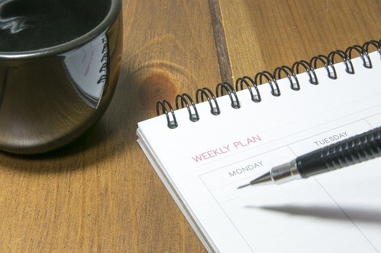
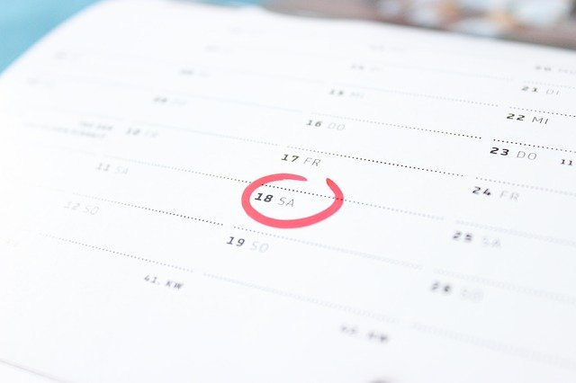

How to self-manage
Geronimo Pairer • Prof. Kiffen Dosch • ENGL&101 - 2232 • 7 October 2020
When taking school courses, it is easy to become lost in the many assignments that are always due. That is why it is important to practice good self-management, which is best accomplished with a good strategy. If you perform self-management, you are responsible for planning out your assignments and taking proper actions. In turn, it is much easier and less stressful, to pursue academic and personal goals and dreams. With proper self-management, the daily workload will be less overwhelming and can be solved step by step following a personal schedule. This can help to reduce stress, which is always a great benefit, especially during this pandemic. Overall, self-management is the skill of being able to take purposeful and planned action to reach goals.
Developing good self-management can come with some challenges. The main struggle of many people is that self-management is closely tied to self-motivation. This is because even with the best-constructed management plan, it is easy to sit around and do nothing if you are not motivated. On the other hand, if you have the motivation to do work, but have a bad and unmanaged plan, then it will also not turn out well, because it is easy to forget an assignment or miss the due date.
Having good self-management is important because it means being responsible for your own doing. First, being able to self-manage will most likely make life less stressful and more productive. For school work in-specific, self-management can help prevent overdue assignments and scrambling to turn in something last minute.

Image by hojun Kang from Pixabay
When performing self-management, one basic method, that people often advise, is putting due dates on a digital or physical calendar. Improving on constructing and following a manageable personal schedule can be the key to actually getting work done. A good approach is to not only write down due dates and deadlines but also to add the specific workdays for assignments and planning backup workdays for when the regular planned days are not enough. To have it even more organized, it is useful to color code different types of events. For example, if I have a writing assignment that is due in 5 days, I write down the due date with a red pen or font. Then, I look for a day at least two days ahead of the deadline where it is practical to work on that assignment and mark the assignment there with a green color. In a perfect world, that would work, but there can be a lot of things that could occur that prevent finishing the task on time, so I mark a backup workday in orange sometime before the due date. With this, assignment work time is planned out, and any delay should not cause as much stress, since a slot for backup work is already assigned. However, it is important to not abuse backup days and to always attempt to complete work on the scheduled date.

Image by Bastian Wiedenhaupt from Pixabay
Just recently, this strategy has helped me a lot, in the first week of college. I needed more time than I expected for one assignment, and I also had a lot of live sessions. However, because of the backup times planned for all my homework, I was able to move some of them to a different date, and finish whatever I could that day. If I would not have had that backup, I would have needed to work on the assignment during the night. If I would have done that, I would probably not have done a very good job on the work, and I would have been very tired the next day.
Overall, self-management is an important skill to develop. It is the understanding that only you yourself are responsible for creating your own plans and acting to pursue your goals. Especially for academic work, a manageable calendar will cause your days to be less stressful and more productive. A good way of achieving this is to write down a personal schedule of assignments, which includes the due date, workdays, and backup workdays. With that plan, some motivation, and responsibility, school work will become easier manageable and less stressful.
Note: This page may be deleted after December 12th, 2020